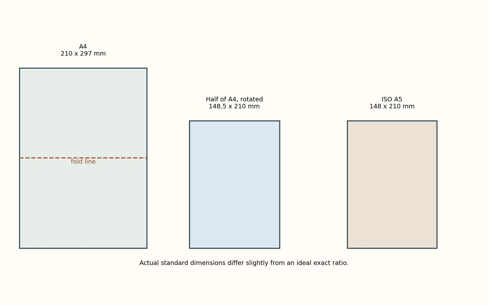

기업과 산업 / 상업과 유통
에어비앤비 — 빈방을 연결하면 생기는 일
초기의 에어 매트리스 사례에서 출발해 온라인 중개, 동네 정보와 규칙의 문제까지 살펴봅니다.
이야기 읽기KNOWLEDGEWALK · 발견과 지식
기업과 컴퓨터, 돈과 과학, 매일 쓰는 물건까지.
오늘의 세상이 만들어진 과정을 이야기로 만납니다.
편안하게 읽고, 세상을 조금 더 깊이.

공장과 생산
읽는 즐거움에, 믿을 만한 근거를 더합니다.
FOLLOW YOUR CURIOSITY
창업과 성장 · 경영과 조직 · 공장과 생산 · 상업과 유통 · 브랜드와 소비
작은 아이디어는 어떻게 공장과 가게, 새로운 산업이 되었을까요?
컴퓨터의 역사 · 소프트웨어 · 인터넷과 통신 · 데이터와 기록 · 인공지능 · 디지털 생활과 보안
화면 뒤에 쌓인 발명과 선택을, 사람의 이야기로 읽습니다.
돈과 화폐 · 은행과 신용 · 투자와 시장 · 보험과 위험 · 금융과 기술
동전과 은행, 시장과 신용이 만들어진 역사를 따라갑니다.
우주와 천문 · 생명과 인체 · 물질과 에너지 · 수학과 측정 · 과학자의 발견
당연해 보이던 세상을 바꾼 질문과 관찰을 만납니다.
식탁과 식품 보존 · 옷과 재료 · 집과 생활 도구 · 이동과 운송 · 놀이와 취미
식탁과 집, 이동과 놀이를 바꾼 작은 발명을 살펴봅니다.
철학의 질문 · 예술을 보는 법 · 책과 이야기의 형식 · 교육과 배움 · 기록과 지식 전달 · 사회와 제도의 탄생
사람은 어떻게 질문하고, 보고, 기록하고, 함께 배웠을까요?
A LITTLE FURTHER
기업과 산업 / 상업과 유통
초기의 에어 매트리스 사례에서 출발해 온라인 중개, 동네 정보와 규칙의 문제까지 살펴봅니다.
이야기 읽기
컴퓨터와 디지털 / 인공지능
AI의 이미지 학습을 옷장 정리처럼 들여다봅니다. 작은 흑백 사진에도 연습과 시험이 따로 있습니다.
이야기 읽기
돈과 금융 / 은행과 신용
전쟁 자금을 필요로 한 정부와 출자자의 거래에서 오래가는 은행이 태어난 과정을 살펴봅니다.
이야기 읽기
과학과 발견 / 수학과 측정
익숙한 복사용지를 접으며 크기와 모양의 관계를 살펴봅니다.
이야기 읽기
생활을 바꾼 물건과 기술 / 놀이와 취미
작고 높은 악기부터 커다란 저음 악기까지 클라리넷 가족을 살펴봅니다.
이야기 읽기생각과 지식 / 사회와 제도의 탄생
노동력 부족과 임금 요구, 영국 노동자법과 길드의 문턱을 통해 경제적 변화와 권력의 관계를 읽습니다.
이야기 읽기
기업과 산업 / 상업과 유통
2010년대 아마존 사례를 통해 온라인 주문과 물류·회원제·노동의 연결을 읽습니다.
이야기 읽기
컴퓨터와 디지털 / 디지털 생활과 보안
사진의 목적에 따라 설명이 달라지는 이유를 통해 웹 이미지의 대체 텍스트와 접근성을 쉽게 살펴봅니다.
이야기 읽기
돈과 금융 / 은행과 신용
19세기 런던 금융시장의 기록에서 당장 지급할 돈과 자산 가치의 차이, 위기 때의 대출 원칙을 읽습니다.
이야기 읽기